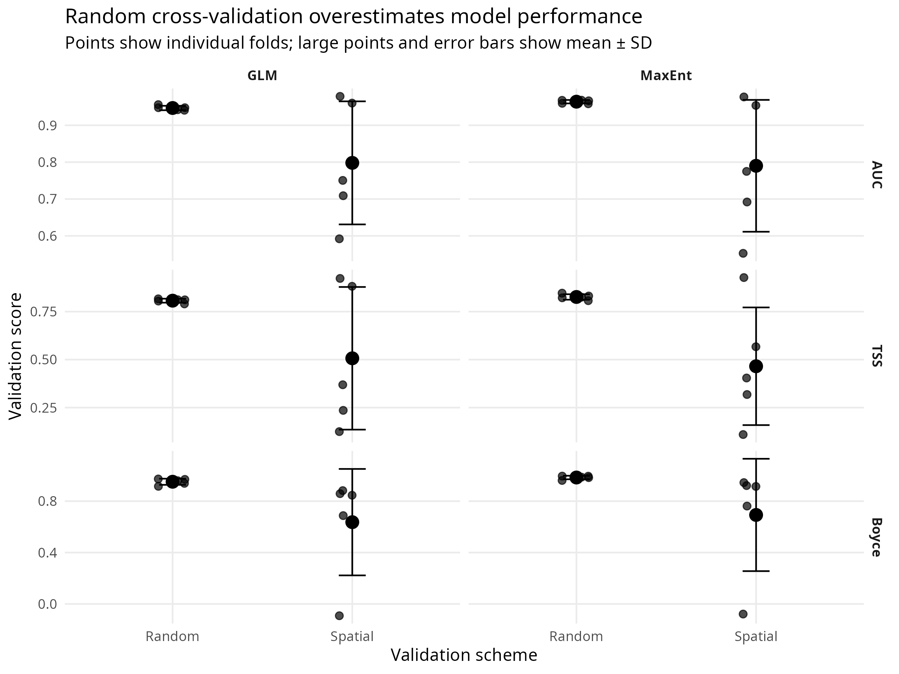
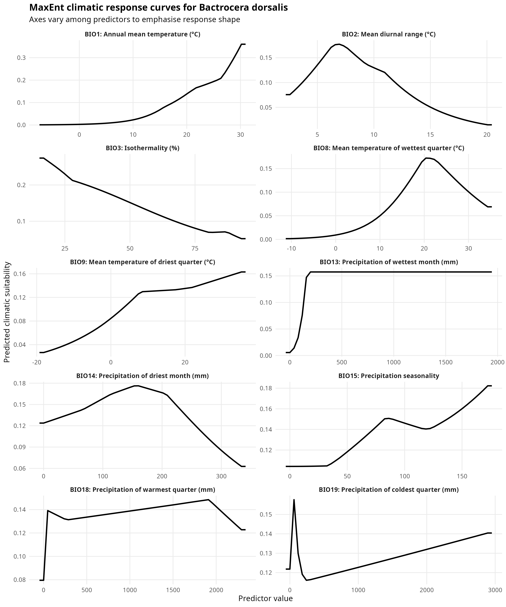
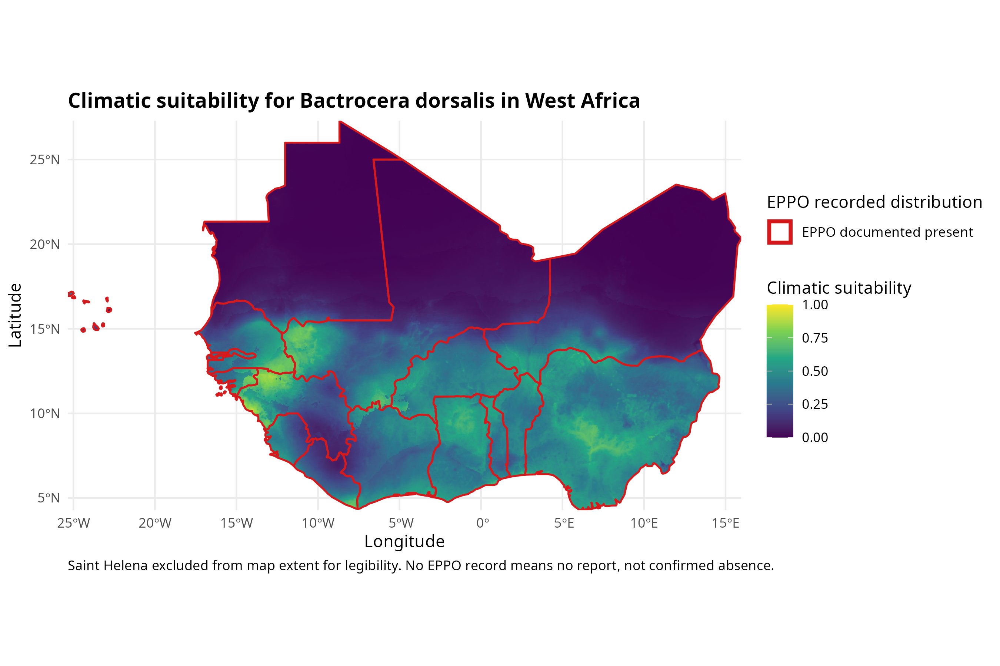
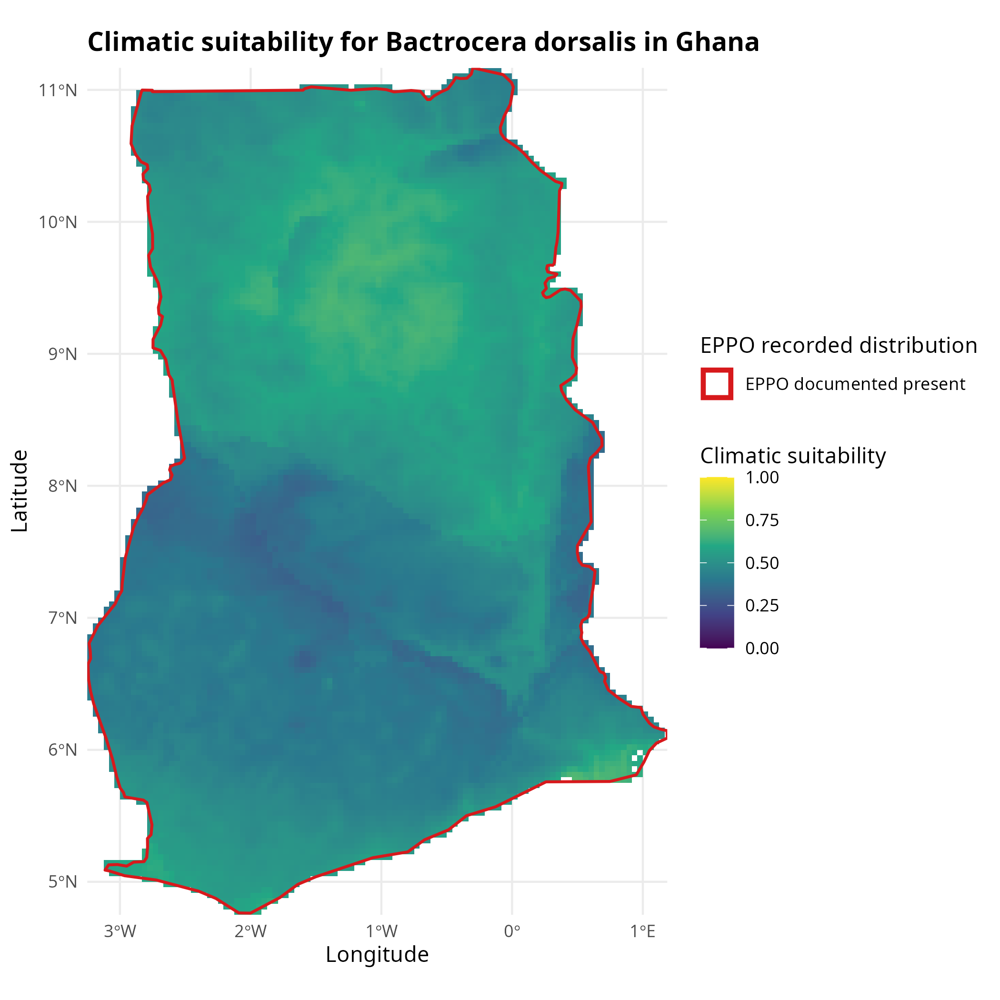

| Stage | Records |
|---|---|
| Raw GBIF occurrences | 11,757 |
| After coordinate artefact filtering | 11,709 |
| After removing occurrences without WorldClim coverage | 11,563 |
| After thinning to one occurrence per WorldClim cell | 1,089 |
Climatic suitability for the oriental fruit fly across West Africa
How much of a species distribution model survives spatial cross-validation
Summary
Bactrocera dorsalis was first detected in Africa in 2003 and had reached 35 sub-Saharan countries within fifteen years (Mutamiswa et al., 2021). It is a regulated quarantine pest in the markets West African horticulture sells into, and its recorded distribution is now dense enough to model.
This report fits a climatic suitability model for the species across West Africa from 1,089 cleaned public occurrence records, and then does the thing that is usually left out. The same model is scored under conventional random cross-validation and under folds separated in space. Apparent performance falls from an AUC of 0.964 to 0.790, and TSS from 0.826 to 0.465. The standard deviation across folds grows by roughly a factor of thirty.
That gap is the result. A model that loses little under spatial validation has learned climate. A model that loses a great deal has learned where entomologists have been working.
1 What this model is, and is not
The caution belongs before the findings rather than after them.
This is a model of where climate resembles the climate at places where someone recorded this insect and uploaded the record. GBIF is a convenience sample, and recording effort follows funded projects, road networks and institutional interest (Zizka et al., 2019). The target-group background used here reduces that distortion (Phillips et al., 2009) but does not remove it.
A climate-only model omits host availability, irrigation, trade pathways, natural enemies and management, all of which decide whether a climatically suitable place is actually infested. MaxEnt output is a relative suitability index, not a probability of presence (Elith et al., 2011), and thresholding it into a binary map imposes a decision the model does not contain.
Absence of records from a country is not absence of the pest. That asymmetry falls hardest on the countries with the least surveillance capacity, which is exactly where a suitability map would be most useful.
2 Question
Two halves, and the second is the one that matters.
First, which climatic variables separate the localities where B. dorsalis has been recorded from the wider background, and what does the resulting suitability surface look like over West Africa and over Ghana?
Second, when the model is validated on spatially separated blocks rather than randomly held-out points, so that it can no longer score itself on the neighbourhood it was trained in, how far does its apparent performance fall?
3 Data
3.1 Occurrence records
Records were retrieved through the GBIF download API, which mints a citable DOI for each query. The B. dorsalis download returned 11,757 georeferenced records with no flagged geospatial issue (DOI 10.15468/dl.jzyuk9). A second download returned 328,343 Tephritidae records excluding B. dorsalis (DOI 10.15468/dl.g9edqf), used later to build the background.
Taxonomy matters here. B. invadens, the name under which the African invasion was first described, was synonymised with B. dorsalis in 2015 (Schutze et al., 2015). Records filed under both names resolve to the same GBIF taxon key, so the African records are not lost.
3.2 Predictors
Nineteen bioclimatic variables from WorldClim v2.1 at 2.5 arc-minutes (Fick & Hijmans, 2017). That resolution is roughly 4.5 km at the equator, which is finer than the occurrence data can support once thinned, and coarse enough to keep the prediction step to seconds.
3.3 Cleaning
Five CoordinateCleaner tests were applied: administrative centroids, identical latitude and longitude, the GBIF office in Copenhagen, biodiversity institution addresses, and exact zeros (Zizka et al., 2019). These flagged 35 centroids and 16 institutions, three records being caught by both, for a loss of 48.
Two tests were deliberately not used as deletion criteria. The capital-city test flagged 433 records, most of them plausible urban observations of a pest that thrives in backyard fruit trees. The sea test proved highly sensitive to coastline resolution. Neither is specific enough to delete on, so whether a location could enter a climatic model was settled instead by whether WorldClim returned a value for it. That removed a further 146 records.
Exact-coordinate duplicates were not filtered separately. 856 coordinates carried repeated records, 10,343 records in total, one coordinate holding 351. Thinning to one record per WorldClim cell handles both exact repeats and distinct coordinates carrying identical climate values, which left 1,089 presences.
The Tephritidae background passed through the same five tests, 328,343 down to 324,912, and the same cell-level thinning. Presences and background have to be cleaned identically, or a difference the model finds between them could be an artefact of the cleaning.
3.4 The stopping rule
A checkpoint was set before fitting began: if the cleaned African records occupied fewer than about 25 distinct 100 km cells, the model would be describing a few field campaigns rather than a climate envelope, and the species would be switched to Spodoptera frugiperda.
75 cleaned African records fell in 75 distinct 100 km cells. The threshold was cleared.
The sparseness is still worth stating plainly. 75 African records, after cleaning, for a pest established across 35 countries. The model is therefore fitted on the global record and projected onto West Africa, rather than fitted on African records alone.
4 Method
4.1 Predictor screening
Variables were dropped one at a time by variance inflation factor until every remaining variable fell below a VIF of 10. Ten survived: BIO1, BIO2, BIO3, BIO8, BIO9, BIO13, BIO14, BIO15, BIO18 and BIO19.
Screening was run on the West African stack rather than the global one. Collinearity between bioclimatic variables is regional, and two variables that separate cleanly worldwide can be near-identical across West Africa alone. Screening globally would have retained variables that are redundant in the area being predicted.
4.2 Background
10,000 background points were drawn from the recorded locations of other Tephritidae, excluding any cell holding a B. dorsalis presence.
The reasoning is the target-group argument (Phillips et al., 2009). Fruit flies are collected by the same traps, in the same orchards, by the same people. Where other Tephritidae were recorded is therefore an approximation of where anyone was looking. Drawing background from those locations means the model is asked to separate presences from other surveyed places, rather than from unsurveyed wilderness. A uniform random background would have handed the model a map of survey effort and allowed it to report the result as climate.
Cells holding a presence were excluded from the background to avoid putting the same cell on both sides of the response.
4.3 Models
MaxEnt (Elith et al., 2011; Phillips et al., 2006) and a ridge-penalised logistic regression were both fitted. Ridge rather than lasso, because the retained predictors remain correlated after VIF screening, and ridge shrinks correlated coefficients together instead of arbitrarily selecting one.
Two algorithms were run so that the validation result could not be dismissed as a quirk of one fitting procedure.
4.4 Validation
Random five-fold cross-validation, stratified by response, provides the conventional baseline. Spatially blocked five-fold cross-validation provides the contrast (Valavi et al., 2019).
Block size was taken from the empirical range of spatial autocorrelation in the predictors, estimated by variogram rather than chosen by eye. The blocked validation was then repeated at half and double that size, because the estimated range is one number with uncertainty around it, and a conclusion that only holds at one block size is not a conclusion.
Three metrics are reported: AUC, TSS (Allouche et al., 2006), and the continuous Boyce index (Hirzel et al., 2006), the last being the one designed for presence-background rather than presence-absence data.
Within every fold the classification threshold was taken from the training data at maximum sensitivity plus specificity, then applied to the held-out data. Taking it from the test data would let the threshold adapt to the answer and would conceal the effect being measured.
5 Results
5.1 The validation comparison
| Algorithm | Validation | AUC | TSS | Boyce | AUC drop | TSS drop | Boyce drop |
|---|---|---|---|---|---|---|---|
| GLM | Random | 0.947 ± 0.006 | 0.807 ± 0.010 | 0.951 ± 0.024 | — | — | — |
| GLM | Spatial | 0.798 ± 0.167 | 0.507 ± 0.371 | 0.637 ± 0.414 | 0.149 | 0.300 | 0.315 |
| MaxEnt | Random | 0.964 ± 0.005 | 0.826 ± 0.014 | 0.984 ± 0.014 | — | — | — |
| MaxEnt | Spatial | 0.790 ± 0.179 | 0.465 ± 0.306 | 0.693 ± 0.437 | 0.174 | 0.361 | 0.291 |

MaxEnt loses 0.174 AUC, 0.361 TSS and 0.291 Boyce when folds are separated in space. The GLM loses 0.149, 0.300 and 0.315. Both algorithms fall by a similar amount, which is the useful part of having run two: the optimism belongs to the validation design, not to MaxEnt.
The spread matters as much as the mean. Under random folds the five MaxEnt AUCs sit between 0.958 and 0.968, a standard deviation of 0.005. Under blocked folds they run 0.977, 0.553, 0.692, 0.775 and 0.954, a standard deviation of 0.179. The model is excellent in some regions and close to uninformative in others. Random cross-validation reports none of that, because every fold contains near neighbours of its own training points, and a model only has to interpolate between them to score well (Roberts et al., 2017).
An AUC of 0.553 on one blocked fold is not a failed run to be tuned away. It is the finding.
5.2 Which predictors
| Rank | Predictor | Contribution |
|---|---|---|
| 1 | BIO13: Wettest-month precipitation | 50.7 |
| 2 | BIO1: Annual mean temperature | 29.8 |
| 3 | BIO8: Temperature of wettest quarter | 8.9 |
| 4 | BIO3: Isothermality | 4.0 |
| 5 | BIO2: Mean diurnal range | 2.0 |
| 6 | BIO18: Warmest-quarter precipitation | 1.9 |
| 7 | BIO19: Coldest-quarter precipitation | 1.0 |
| 8 | BIO9: Temperature of driest quarter | 0.9 |
| 9 | BIO15: Precipitation seasonality | 0.6 |
| 10 | BIO14: Driest-month precipitation | 0.3 |

Wettest-month precipitation and annual mean temperature together account for just over four fifths of the contribution. That is consistent with the biology of a species that needs warmth and moist fruiting seasons. It is equally consistent with sampling bias, because people and their fruit trees also concentrate in warm, wet places, and the two explanations cannot be separated by this model.
Percent contribution in MaxEnt is heuristic and depends on the order variables entered the fit. Read the table as a ranking, not as a partition of explained variance.
5.3 Suitability surfaces


The regional surface separates the Sahelian north, which the model treats as unsuitable, from the coastal and Guinea savanna belt running along the Gulf of Guinea. Within Ghana the pattern is not a simple south-to-north gradient. The highest values fall in the mid-country belt around the Black Volta and the Northern and Bono East areas, with a further pocket at the south-east coast, while the forest zone in the south-west returns middling values.
The EPPO overlay is an external check rather than a validation. EPPO records reporting, not presence, so a country outlined as having no record is a country from which nobody has reported. Where the model predicts high suitability inside such a country, the map cannot distinguish a surveillance gap from a false positive. Read against the blocked-fold spread in Table 2, that ambiguity should be taken seriously rather than resolved optimistically.
6 What would change the answer
More African records would change it most. 75 cleaned African records is thin for a continental projection. The model leans on the Asian native range for its climate envelope and assumes the invasive population occupies the same one, which is the standard assumption in invasive-species modelling and is not always true.
A better background would change it next. The target group correction assumes Tephritidae recording effort resembles B. dorsalis recording effort. That is plausible and untested here.
The block size assumption is testable and was tested. Results at half and double the estimated autocorrelation range are written to data/processed/block_sensitivity_summary.csv by 03_analysis.R.
Nothing here says anything about the future. No climate scenarios were run. Adding them would multiply the output without addressing the uncertainty this report has already found in the present-day fit.
7 Conclusion
The suitability surface is unremarkable and broadly matches what is known about the species. The validation comparison is the part worth keeping.
Reported the conventional way, this model has an AUC of 0.964 and would read as excellent. Reported honestly, it has an AUC of 0.790 with a standard deviation of 0.179, and performs close to chance in at least one region of the study area. Both numbers come from the same model, the same data and the same code. Only the way the folds were drawn differs.
Species distribution models are among the most commonly submitted and most commonly over-claimed analyses in applied ecology. Where such a model informs surveillance priorities or phytosanitary decisions, the blocked figure is the one that should travel with it.
8 Data and code availability
Occurrence data are archived at GBIF under DOIs 10.15468/dl.jzyuk9 and 10.15468/dl.g9edqf. Climate data are WorldClim v2.1, CC BY-SA 4.0. Distribution records are from the EPPO Global Database (taxon DACUDO). Analysis code and package versions are in the repository; see README.md for the run order and for the reproducibility caveats.
9 Software
Analysis in R 4.6.1. Occurrence retrieval with rgbif, cleaning with CoordinateCleaner 3.0.1 (Zizka et al., 2019), raster handling with terra, predictor download with geodata, collinearity screening with usdm, modelling with predicts and glmnet, spatial cross-validation with blockCV 3.2-0 (Valavi et al., 2019), the Boyce index with modEvA, and figures with ggplot2 and sf.
References
Allouche, O., Tsoar, A., & Kadmon, R. (2006). Assessing the accuracy of species distribution models: Prevalence, kappa and the true skill statistic (TSS). Journal of Applied Ecology, 43(6), 1223–1232. https://doi.org/10.1111/j.1365-2664.2006.01214.x
Elith, J., Phillips, S. J., Hastie, T., Dudík, M., Chee, Y. E., & Yates, C. J. (2011). A statistical explanation of MaxEnt for ecologists. Diversity and Distributions, 17(1), 43–57. https://doi.org/10.1111/j.1472-4642.2010.00725.x
Fick, S. E., & Hijmans, R. J. (2017). WorldClim 2: New 1-km spatial resolution climate surfaces for global land areas. International Journal of Climatology, 37(12), 4302–4315. https://doi.org/10.1002/joc.5086
Hirzel, A. H., Le Lay, G., Helfer, V., Randin, C., & Guisan, A. (2006). Evaluating the ability of habitat suitability models to predict species presences. Ecological Modelling, 199(2), 142–152.
Mutamiswa, R., Nyamukondiwa, C., Chikowore, G., & Chidawanyika, F. (2021). Overview of oriental fruit fly, Bactrocera dorsalis (Hendel) (Diptera: Tephritidae) in Africa: From invasion, bio-ecology to sustainable management. Crop Protection, 141, 105492. https://doi.org/10.1016/j.cropro.2020.105492
Phillips, S. J., Anderson, R. P., & Schapire, R. E. (2006). Maximum entropy modeling of species geographic distributions. Ecological Modelling, 190(3-4), 231–259. https://doi.org/10.1016/j.ecolmodel.2005.03.026
Phillips, S. J., Dudík, M., Elith, J., Graham, C. H., Lehmann, A., Leathwick, J., & Ferrier, S. (2009). Sample selection bias and presence-only distribution models: Implications for background and pseudo-absence data. Ecological Applications, 19(1), 181–197. https://doi.org/10.1890/07-2153.1
Roberts, D. R., Bahn, V., Ciuti, S., Boyce, M. S., Elith, J., Guillera-Arroita, G., Hauenstein, S., Lahoz-Monfort, J. J., Schröder, B., Thuiller, W., Warton, D. I., Wintle, B. A., Hartig, F., & Dormann, C. F. (2017). Cross-validation strategies for data with temporal, spatial, hierarchical, or phylogenetic structure. Ecography, 40(8), 913–929. https://doi.org/10.1111/ecog.02881
Schutze, M. K., Aketarawong, N., Amornsak, W., Armstrong, K. F., Augustinos, A. A., Barr, N., Bo, W., Bourtzis, K., Boykin, L. M., Cáceres, C., Cameron, S. L., et al. (2015). Synonymization of key pest species within the Bactrocera dorsalis species complex (Diptera: Tephritidae): Taxonomic changes based on a review of 20 years of integrative morphological, molecular, cytogenetic, behavioural and chemoecological data. Systematic Entomology, 40(2), 456–471. https://doi.org/10.1111/syen.12113
Valavi, R., Elith, J., Lahoz-Monfort, J. J., & Guillera-Arroita, G. (2019). blockCV: An R package for generating spatially or environmentally separated folds for k-fold cross-validation of species distribution models. Methods in Ecology and Evolution, 10(2), 225–232. https://doi.org/10.1111/2041-210X.13107
Zizka, A., Silvestro, D., Andermann, T., Azevedo, J., Duarte Ritter, C., Edler, D., Farooq, H., Herdean, A., Ariza, M., Scharn, R., Svantesson, S., Wengström, N., Zizka, V., & Antonelli, A. (2019). CoordinateCleaner: Standardized cleaning of occurrence records from biological collection databases. Methods in Ecology and Evolution, 10(5), 744–751. https://doi.org/10.1111/2041-210X.13152